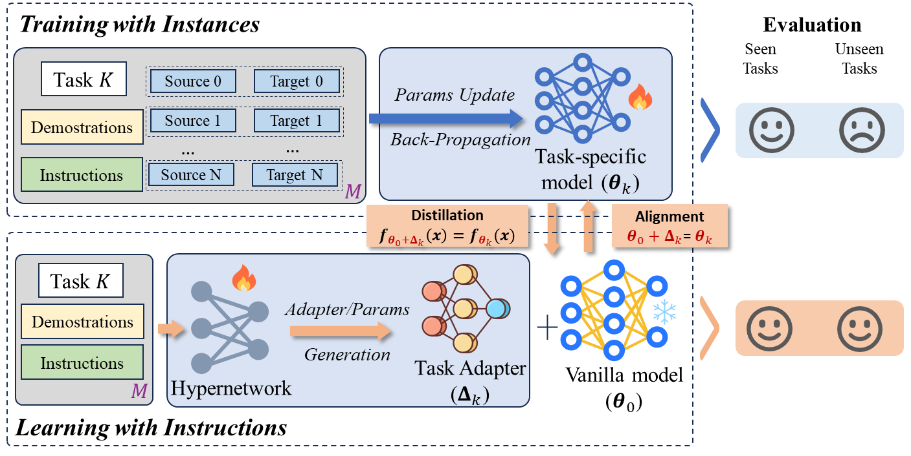
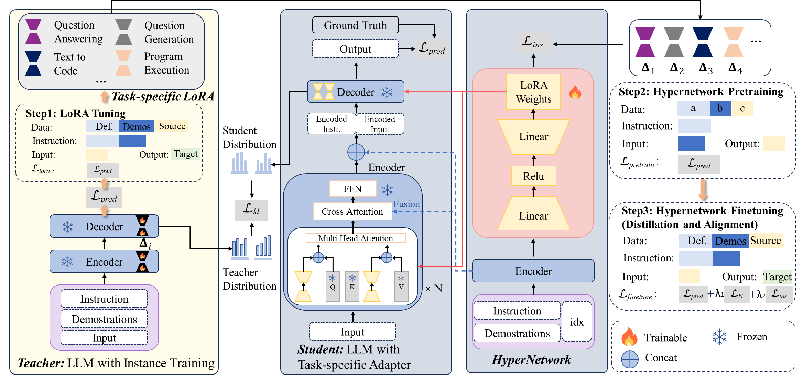
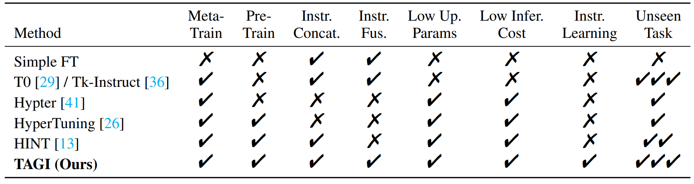
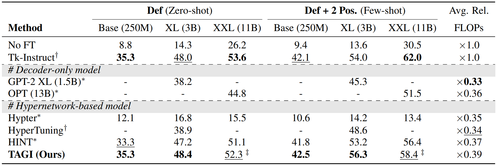
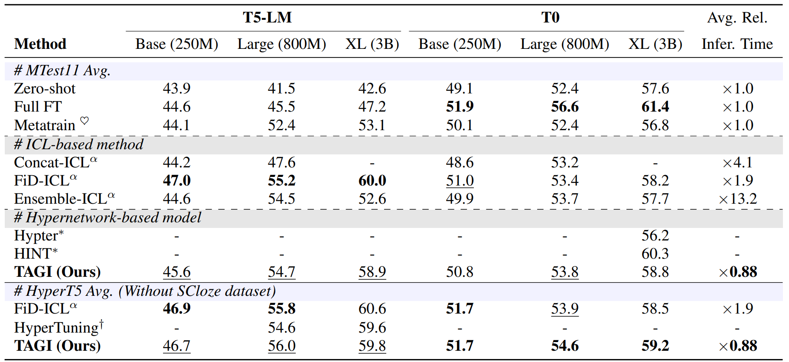

Large language models (LLMs) have acquired the ability to solve general tasks by utilizing instruction finetuning (IFT). However, IFT still relies heavily on instance training of extensive task data, which greatly limits the adaptability of LLMs to real-world scenarios where labeled task instances are scarce and broader task generalization becomes paramount. Contrary to LLMs, humans acquire skills and complete tasks not merely through repeated practice but also by understanding and following instructional guidelines. This paper is dedicated to simulating human learning to address the shortcomings of instance training, focusing on instruction learning to enhance cross-task generalization. Within this context, we introduce Task Adapters Generation from Instructions (TAGI), which automatically constructs the task-specific model in a parameter generation manner based on the given task instructions without retraining for unseen tasks. Specifically, we utilize knowledge distillation to enhance the consistency between TAGI developed through Learning with Instruction and task-specific models developed through Training with Instance, by aligning the labels, output logits, and adapter parameters between them. TAGI is endowed with cross-task generalization capabilities through a two-stage training process that includes hypernetwork pretraining and finetuning. We evaluate TAGI on the Super-Natural Instructions and P3 datasets. The experimental results demonstrate that TAGI can match or even outperform traditional meta-trained models and other hypernetwork models, while significantly reducing computational requirements.
Training with instance vs. learning with instruction
Comparison of typical Training with Instance and the proposed Learning with Instruction: the former involves training the model at the instance level with parameter updates, while the latter generates a task-specific adapter at the task level with parameter generation.

Hypernetwork and task-specific model
TAGI consists of two core components: a hypernetwork which receives task instructions and generates parameter-efficient adapters, and a task-specific model which combines the vanilla LLM and the generated adapters from the hypernetwork.

Characteristics of baseline methods vs. TAGI
We compare the characteristics of all comparison methods and the proposed TAGI.

Super-Natural Instructions (SNI) and P3
Results of our main experiment on the SNI dataset.

Results of our main experiment on the P3 dataset.

@article{liao2024instance,
title={From instance training to instruction learning: Task adapters generation from instructions},
author={Liao, Huanxuan and He, Shizhu and Xu, Yao and Zhang, Yuanzhe and Hao, Yanchao and Liu, Shengping and Liu, Kang and Zhao, Jun},
journal={Advances in Neural Information Processing Systems},
volume={37},
pages={45552--45577},
year={2024}
}